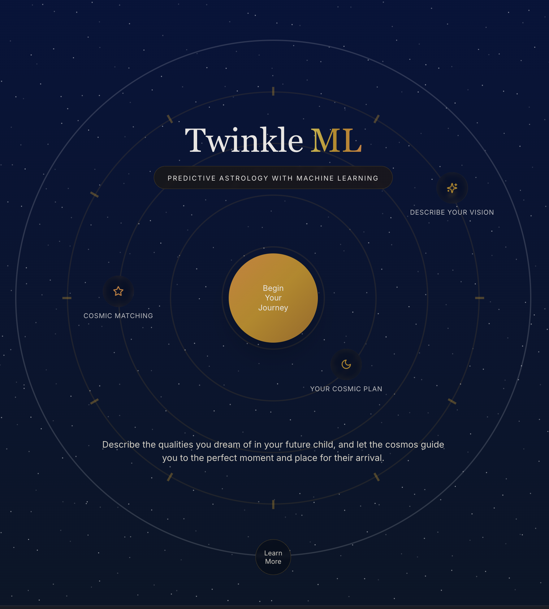

Portfolio
Publications
-
Ethical Analysis: Honesty and Self-Interest (N. Hsieh, C. Diak) - Harvard Business School Publishing, 2023
-
Rooted in Roxbury: Race and Equity in the Boston Cannabis Industry (J. Coval, R.S. Ruback, C. Diak) - Harvard Business School Publishing, 2023
-
Economic Analysis: The Hidden Costs of Layoffs and Managing Staff Reductions (S.J. Sucher, M. Morgan Westner, C. Diak) - Harvard Business School Publishing, 2023
-
Managing Pain in the Midst of an Opioid Epidemic (J.D. Coval, R.S. Ruback, C. Diak) - Harvard Business School Publishing, 2022
-
The Role of ESG in Investment Strategy (V. Gandhi, C. Diak, R. Kak) - Harvard Business School Publishing, 2022
-
Corporate Responses to the War in Ukraine: Nestlé (N. Hsieh, C. Diak) - Harvard Business School Publishing, 2022
-
Legal Analysis: Bribery and Corruption (N. Hsieh, C. Diak, M. Souba) - Harvard Business School Publishing, 2022
-
Ethical Analysis: Well-Being and Rights (N. Hsieh, C. Diak) - Harvard Business School Publishing, 2022
Work & Teaching
Dartmouth College (2024-Present)
- Research Assistant, Lab for Mind, Brain, and Computation
The Chernik Group (2024-2025)
Harvard Business School (2019-2024)
- Project Manager, The Spiritual Lives of Leaders
- Research Associate, General Management Unit
- Research Associate, Finance Unit
- Research Assistant to Professor Arthur I. Segel
- Program Assistant, The Forum for Growth & Innovation
Harvard University (2019-2024)
- Teaching Fellow, Work, Life, and Purpose in an Uncertain World, Harvard College
- Multidisciplinary Student Researcher, Policy Pathways for Perennial Agriculture, Radcliffe Institute for Advanced Study
- Research Assistant, Justice, Health, and Democracy Initiative, Edmond J. Safra Center for Ethics
Academic Essays
AI & Machine Learning
Neuroscience
Philosophy
Podcasting & Writing
The Disruptive Voice
The Market for Meaning
Pixel Rick
Alignment
-
Alignment
– The world's first vibe forecasting app. Alignment combines astrology and computational intelligence into a personalized weather map for meaning.
Twinkle.ml
-

Twinkle.ml
– Use astrological reasoning to find the perfect place and time to have the child of your dreams!
Spirituality & Religion